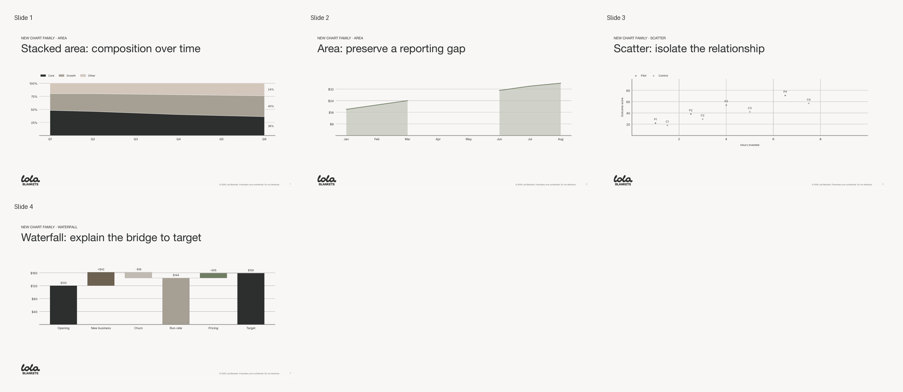
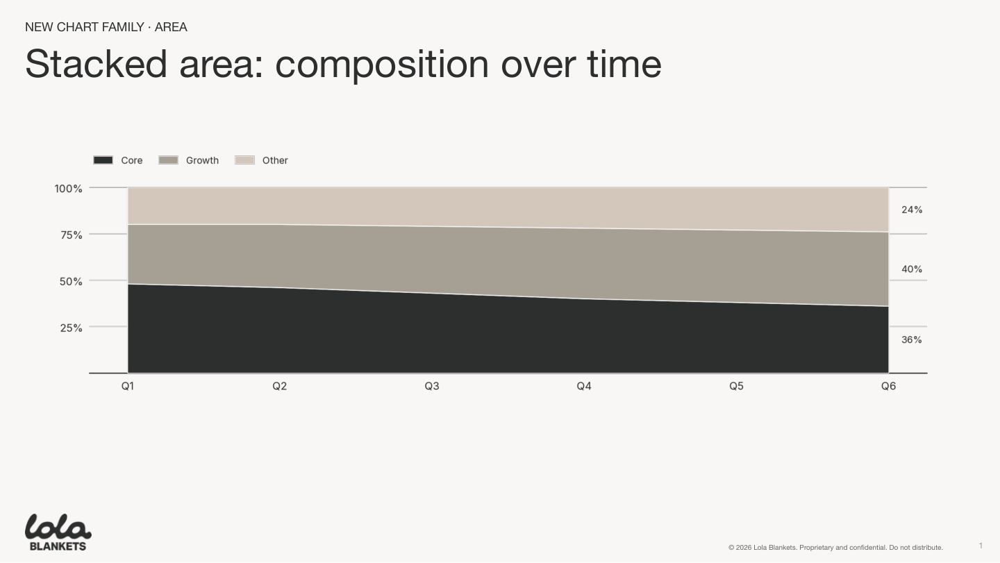
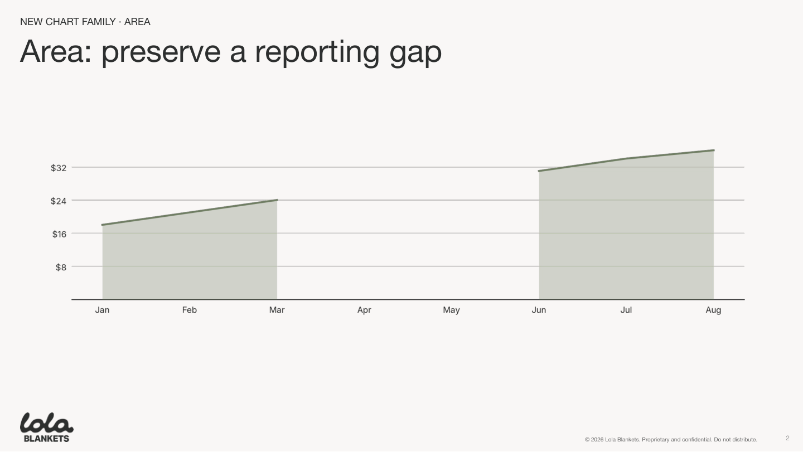
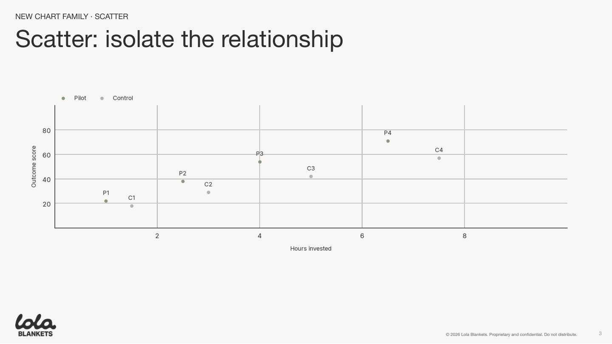
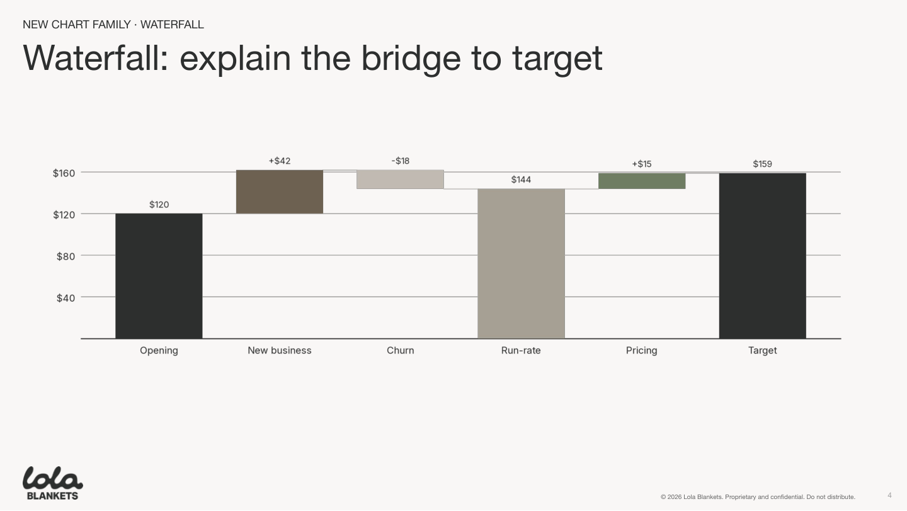

Cartesian charts visual review candidate
Generated from the new area, scatter, and waterfall renderers. Review the full-size slides below; the contact sheet is only for overview.





Generated from the new area, scatter, and waterfall renderers. Review the full-size slides below; the contact sheet is only for overview.




